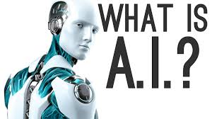
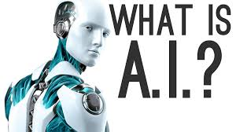

.jpg "Artifical Intelligence") 

Artificial intelligence (AI, also machine intelligence, MI) is apparently intelligent behaviour by machines, rather than the natural intelligence (NI) of humans and other animals. In computer science AI research is defined as the study of "intelligent agents": any device that perceives its environment and takes actions that maximize its chance of success at some goal. Colloquially, the term "artificial intelligence" is applied when a machine mimics "cognitive" functions that humans associate with other human minds, such as "learning" and "problem solving". The scope of AI is disputed: as machines become increasingly capable, tasks considered as requiring "intelligence" are often removed from the definition, a phenomenon known as the AI effect, leading to the quip "AI is whatever hasn't been done yet." For instance, optical character recognition is frequently excluded from "artificial intelligence", having become a routine technology. Capabilities generally classified as AI as of 2017 include successfully understanding human speech, competing at a high level in strategic gamesystems (such as chess and Go), autonomous cars, intelligent routing in content delivery networks, military simulations, and interpreting complex data. Artificial intelligence was founded as an academic discipline in 1956, and in the years since has experienced several waves of optimism, followed by disappointment and the loss of funding (known as an "AI winter"), followed by new approaches, success and renewed funding. For most of its history, AI research has been divided into subfields that often fail to communicate with each other. However, in the early 21st century statistical approaches to machine learning became successful enough to eclipse all other tools, approaches, problems and schools of thought.
Yapay zeka hakkýnda daha fazla öðrenmek için TIKLAYINIZ